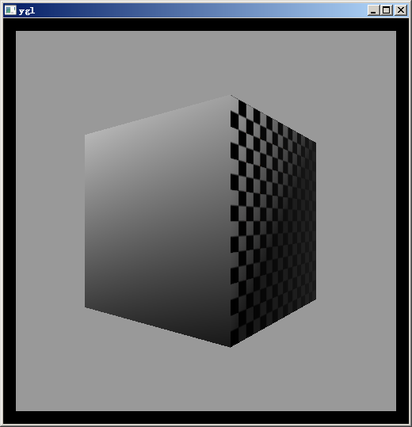
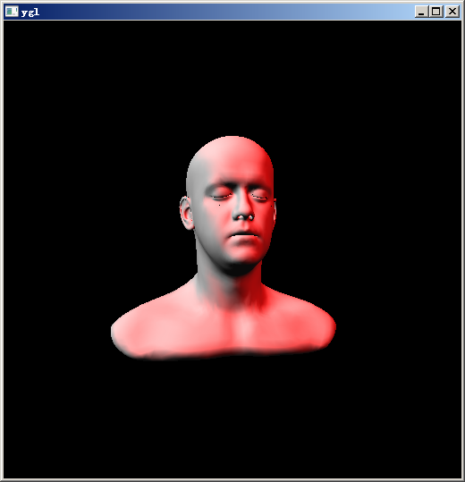
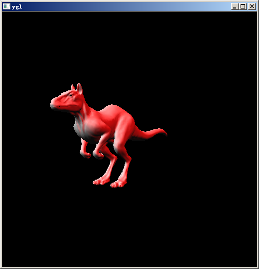
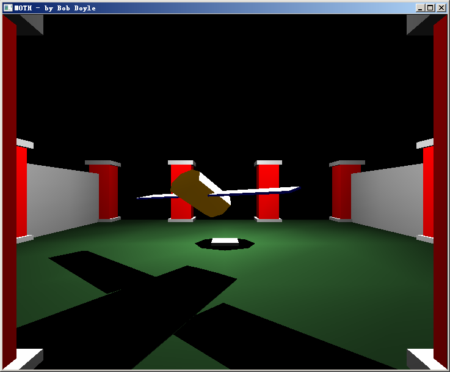

YGL Graphics Library
About
YGL is a project that I started when I took the undergraduate Compute Graphics course. My goal was to implement the entire OpenGL 1.1 pipeline. I picked up the project again in my graduate Compute Graphics course.
Features
YGL implements most rendering related interfaces in OpenGL 1.1 specification:
- Point, Line and Polygon primitives
- 2D texture mapping with perspective correction
- Two-sided lighting
- Back-face culling
- Alpha blending
- Fogging
- And more... please refer to ygl.h
- These components are not implemented: glDrawPixels, glCopyPixels, Display List, Slection, Feedback, Accumulation Buffer etc.
Pipeline
The sequence below describes the YGL pipeline (optionally denoted with the underlying algorithms):
-
Specify Vertices
- Apply Model-view matrix which transform vertices and normals to Camera Space
- Per-vertex lighting
- Apply Perspective matrix to transform vertices to Homogeneous Space (also as Clip Space later)
- Primitive assembling (group vertices to lines, triangles, quads or polygons)
- Clipping (line clipping: Liang-Barsky, polygon-clipping: Sutherland-Hodgman)
- Perspective division and viewport transform (now vertices are in Window Coordinates Space)
- Backface culling
- Rasterization and texturing (line: Bresenham, polygon: convert to triangle-fan and use Scanline algorithm)
- Fogging
- Per-fragment operation (Scissor test-> Alpha test -> Stencil test -> Depth test -> Alpha blending -> Logical operations)
- Write color to frame buffer and draw onto the screen
Usage
YGL is compatible with GLUT, but remember to include ygl.h first, e.g.:
#include "ygl.h"
#include "yglu.h"
using namespace ygl;
#include <gl/glut.h>
Demos
All the tests run on Intel Core i5-2300 @ 2.80GHz; window size: 512 by 512.

FPS: 104 (smooth shading, 1 light, texture, perspective correction, bilinear filter, fogging)

FPS: 30 (faces: 18K, 2 lights)

FPS: 26 (faces: 23K, 2 lights)
The example below is from OpenGL website, and I use it to validate YGL's pipeline. It's a program showing an animation, with lighting and shadow effect. It's able to run with YGL by simply changing the display lists to C marcos in the code.

Source code
[github]
Acknowledgments
The bunny model is from Stanford 3D Scanning Repository; the killeroo model is from Princeton Shape Benchmark Repository; the head model is from Infinite Realities; the MOTH program is from OpenGL's GLUT examples archives.
Reference
-
OpenGL 1.1~1.5 specification
-
Blinn, James F., and Martin E. Newell. "Clipping using homogeneous coordinates." ACM SIGGRAPH Computer Graphics. Vol. 12. No. 3. ACM, 1978.
-
Liang-Barsky Algorithm, Wikipedia
-
Bresenham's line algorithm, Wikipedia
-
Perspective Texture Mapping, Wikipedia
-
Rasterization Rules, Microsoft
Last updated 12/9/2014